My background spans CRM operations, customer-journey analysis, and marketing measurement. These are hands-on portfolio projects using demonstration data to show how I structure an account, validate its tracking, manage changes, and report the result.
Case studies
Four connected hands-on portfolio projects using demonstration data across strategy, measurement, optimization, and reporting.
Hands-on project · Search architecture
Apple omni-channel campaign architecture
A five-part account structure that separates branded, product, competitor, professional, and automated demand.
Choose a campaign below to read the complete build and rationale here.
Planning budgetHow the initial 100% is ring-fenced
25 / 55 / 10 / 10
Brand defense25%
Mac B2B + Flagship driver55%
Mac B2BFlagship
Conquest10%
PMax10%
Key decision
Keep brand defense separate from discovery so automated traffic does not hide where demand started.
How it is managed
Give each layer its own intent, audience, budget logic, and success criteria.
What to review
Account structure, query routing, budget ownership, and the role assigned to each channel.
Hands-on project · Measurement
GA4 and GTM conversion architecture
A tracking plan for consent states, e-commerce events, cross-domain journeys, and BigQuery exports.
Choose a case below to inspect the full technical blueprint here.
Consent Mode v2GTM data layerGA4 eventsBigQuery
Consent handling
Default-denied consent states with dynamic updates and controlled trigger behavior.
Stream architecture
Cross-domain linker configuration, referral exclusions, and reliable parameter passing.
Key events
add_to_cart, begin_checkout, and purchase mapped to consistent e-commerce payloads.
Custom definitions
Event-scoped and user-scoped parameters designed for useful segmentation.
Warehouse export
Event-level BigQuery data supporting deeper attribution and SQL analysis.
Hands-on project · Optimization
Search-term audit and experiment plan
A repeatable review for cutting irrelevant spend, testing ad messages, and responding to auction pressure.
Choose a deliverable below to inspect the complete operating method here.
1,200queries reviewed
$12.4killustrative waste identified
3review workstreams
Search-term audits
Classify zero-conversion and mismatched queries, then route them into governed exclusion lists.
RSA experimentation
Compare price-anchor messaging against friction-reduction messaging using CTR, CVR, CPA, and statistical confidence.
Auction response
Translate impression-share movement into a focused bid, quality, and competitor-response memo.
This hands-on project uses demonstration data to show the analysis and decision process.
Hands-on project · Business intelligence
Looker Studio executive reporting suite
Three dashboard views for executive performance, budget pacing, and funnel analysis.
Choose a dashboard below to read the complete analysis and recommendations here.
Executive
SEM Fleet Center
A 60-second view of revenue direction, conversions, and device composition.
Finance
ROAS & Budget Pacing
Spend burn, profitability, and campaign-level allocation signals.
Performance
Funnel Pathway Matrix
From impressions through micro-conversions to completed outcomes.
Built for the reader
Each dashboard is limited to the decisions its audience owns.
Defined metrics
Calculated fields and source definitions keep platform totals consistent.
Review output
Each meeting closes with approved pacing changes, test priorities, and named next steps.
This hands-on project uses demonstration data to show the reporting structure and analysis.
Brand defense
A precision-led Search build for protecting branded purchase intent without mixing it with broader discovery traffic.
ChannelGoogle Ads Search
MarketUnited States
StatusPaused demonstration build
Portfolio exercise — not client work. The platform screens and figures demonstrate the build; no Apple account access or live commercial results are claimed.
Question
How should branded purchase intent be protected without mixing it with broader discovery traffic?
Decision
Use exact and phrase match, separate exclusions, a €1.50 CPC guardrail, and trust-led ad assets.
Artifact
A paused campaign build with keyword groups, campaign controls, sitelinks, and launch checks.
Next step
Validate query quality, landing pages, conversion tracking, and impression-share loss before launch.
Why the campaign stays narrow
Brand protection is designed to capture a finite set of high-intent searches, not discover new traffic. The keyword set therefore uses exact match for unambiguous brand terms such as [apple store], [apple.com], and [apple website], plus tightly scoped phrase match for purchase intent such as "buy macbook online" and "buy iphone online". Broad match is excluded because unrelated, competitor-adjacent, support, or informational queries would dilute the signal and consume a budget intended for brand coverage.
A campaign-level negative layer routes recruitment, support, repair, and other non-sales intent elsewhere. Examples include careers and internship searches, repair and support-number searches, and appointment queries. The goal is not simply lower traffic; it is traffic whose intent is consistent enough that performance can be interpreted.
Message and bidding controls
Guaranteed trust signal
“Official Apple Store” is pinned to headline position one so authenticity is present on every eligible impression rather than left to responsive-ad rotation.
Bounded automation
Maximize Clicks is paired with a €1.50 maximum CPC. Automation can seek volume, but it cannot set an unlimited price for an individual branded click.
Disciplined daily budget
The demonstration uses a €10 daily budget instead of accepting the platform’s recommendation automatically. Branded demand is finite, so a recommendation to spend more must be supported by lost-impression-share evidence.
Search-only inventory
English targeting, relevant audience observation, and exclusion of Display inventory keep the campaign aligned with active branded search demand.
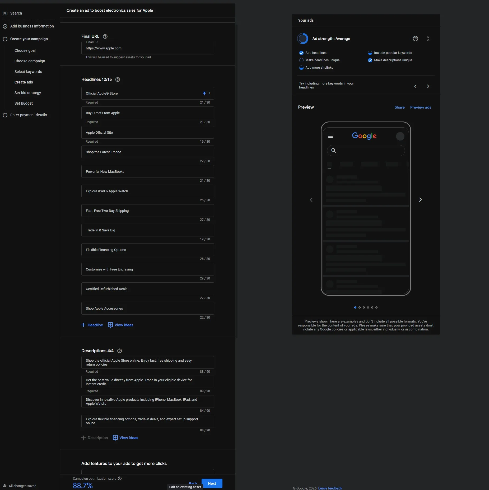
The staged responsive-ad build shows the official-store trust message, supporting product and service headlines, and a live mobile preview.
Assets and validation
Product-specific sitelinks—Trade In, Refurbished Deals, Shop Mac, and Shop iPhone—expand the result while keeping destinations commercially relevant. Supporting descriptions cover delivery, trade-in value, financing, and product breadth. Before launch, the build requires a validated purchase event, landing-page checks, policy approval, search-term review, and separate monitoring of impression share lost to rank and budget.
The campaign remains paused because this is a portfolio construction exercise. A clean build demonstrates architecture and QA discipline; it does not demonstrate incremental revenue or prove that paid brand coverage is necessary.
Flagship driver
A high-intent iPhone Search build designed for controlled volume, complete asset coverage, and a deliberate launch state.
ChannelGoogle Ads Search
ObjectiveWebsite visits and purchase intent
StatusPaused demonstration build
Portfolio exercise — not client work. Product names, settings, and screens demonstrate campaign construction. Spend and performance remain at zero by design.
Question
How can a flagship-product campaign capture demand without surrendering routing and budget control?
Decision
Build Search directly, align every product asset to its destination, and keep the demonstration campaign paused.
Artifact
Campaign setup, product sitelinks, responsive ad copy, service callouts, and a launch-verification view.
Next step
Validate tracking, policy, landing pages, and query routing before enabling automated bidding.
Direct setup instead of guided defaults
The build starts with “Create a campaign without guidance” and selects Search explicitly. That choice keeps control over campaign settings, bidding, destinations, and assets rather than inheriting a guided template whose defaults may not match the account structure. The demonstration campaign is named for market, channel, product role, and objective so it can sit inside a larger fleet without relying on memory.
Product routing and ad coverage
Sitelinks map comparison and purchase intent to distinct destinations: flagship Pro, Air, standard, and Max variants; Trade In; and model comparison. The responsive ad uses exact product language early in the headline set, then adds non-repeating value propositions around financing, chip performance, design, delivery, and purchase actions.
Descriptions cover financing, trade-in credit, delivery speed, and the product range. Callouts such as “Free 2-Day Delivery” and “Flexible Payment Plans” bring commercial detail into the result before the click. Optional asset fields are treated as part of the build rather than decoration because thin asset coverage limits the combinations the system can test.
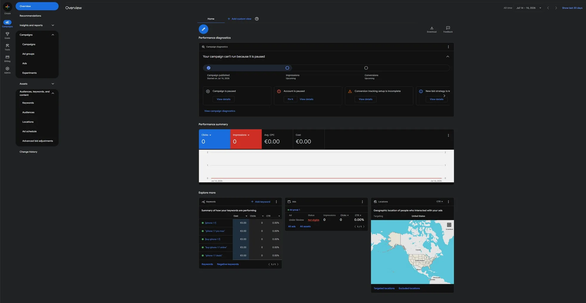
Final launch verification confirms the portfolio campaign is published but paused, with no live spend.
Launch gate
MeasurementConfirm the purchase event, value, currency, and transaction identifier in preview and reporting tools.
ExperienceVerify each asset lands on the promised product or comparison page and works across mobile and desktop.
GovernanceCheck policy status, budget ownership, query exclusions, and campaign naming before activation.
OptimizationEstablish a clean search-term and CPA baseline before handing more control to bid automation.
Mac B2B & pro creator
Search architecture for technical buyers, teams, and enterprise demand, using precise destinations and language as pre-qualification.
ChannelGoogle Ads Search
AudienceEnterprise and professional buyers
StatusPaused demonstration build
Portfolio exercise — not client work. The case demonstrates segmentation and construction; it does not claim qualified leads, pipeline, or sales.
Question
How should professional and business intent be separated from general consumer hardware traffic?
Decision
Keep URL and copy control, combine exact and phrase intent, and use B2B-specific assets and exclusions.
Artifact
Automation controls, keyword architecture, technical RSA copy, negative taxonomy, and a paused build.
Next step
Confirm landing-page capability, sales follow-up, audience policy, and lead-quality feedback before launch.
Control before automation
AI Max, Final URL Expansion, and Text Customization remain disabled. A buyer looking to place a bulk workstation order should not be routed to a consumer article or support page, and automatically generated retail language should not replace exact chip, memory, deployment, or volume-pricing terms. In this campaign, destination and language accuracy are part of qualification.
Intent architecture
Exact and phrase keywords isolate procurement, development, fleet, and professional-creator demand without broad match. Sitelinks act as SERP-level filters: request a bulk quote, configure a workstation, set up Apple Business Manager, or submit tax-exemption information. Someone looking for a single discounted laptop should recognize immediately that the path is not designed for them.
Enterprise assets
Volume discounts, zero-touch deployment, workstation configuration, and tax handling make the buying context explicit.
Technical ad copy
Headlines focus on professional use, exact specifications, fleet needs, and direct procurement rather than generic lifestyle claims.
Consumer exclusions
Bargain, free, tutorial, career, education-discount, repair, warranty, and store-hours terms are blocked from the corporate budget.
Protected B2B language
Business and enterprise phrases remain eligible even when automated recommendations suggest excluding unfamiliar variants.
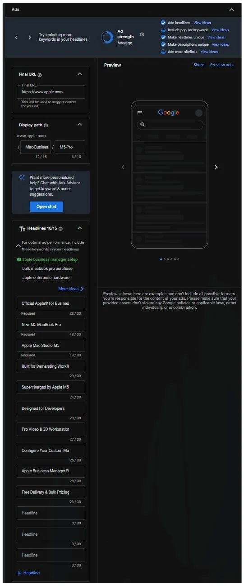
The responsive-ad build uses business-specific headlines and destinations rather than consumer promotion language.
Negative-keyword governance
The negative list is grouped by why the query conflicts with the campaign: bargain retail, free information, jobs, education pricing, and consumer support. Broad negatives are used carefully to block any query containing a clearly incompatible term, while high-value “business” and “enterprise” language is explicitly protected. After launch, sales feedback and search-term data would determine whether intent is genuinely qualified; the staged console alone cannot prove lead quality.
Competitor conquesting
A controlled Search route for comparison and switching demand without unsupported product claims or indiscriminate competitor traffic.
ChannelGoogle Ads Search
AudienceAndroid comparison and switcher intent
StatusStaged scenario
Portfolio exercise — not client work. Competitor benchmarks, auction outcomes, and conversion performance are not live observations.
Question
How can competitor demand be addressed without relying on unsupported product-comparison claims?
Decision
Lead with switching friction, route to a purpose-built page, and isolate competitor terms and exclusions.
Confirm legal language, query economics, destination readiness, and conversion tracking in a bounded test.
A dedicated switching route
The campaign is separated from the flagship iPhone build so competitor economics, policies, and message tests can be evaluated independently. Its final URL must resolve the objections raised in the ad: a trade-in calculator, a Move to iOS walkthrough, evidence from real switchers, carrier-compatibility answers, and financing information. Locking a URL has little value if the destination still behaves like a generic product page.
Query and message strategy
Phrase match covers flagship model families and explicit switching language; exact match covers more specific configurations. Broad match stays off because it would invite general news, troubleshooting, accessories, and existing-owner support queries. The ad focuses on reducing migration friction—moving data, trade-in, compatibility, and setup—rather than making product-superiority claims the demonstration cannot support.
Four sitelinks answer distinct objections instead of repeating the same destination: trade-in value, switching guidance, model comparison, and financing or carrier help.
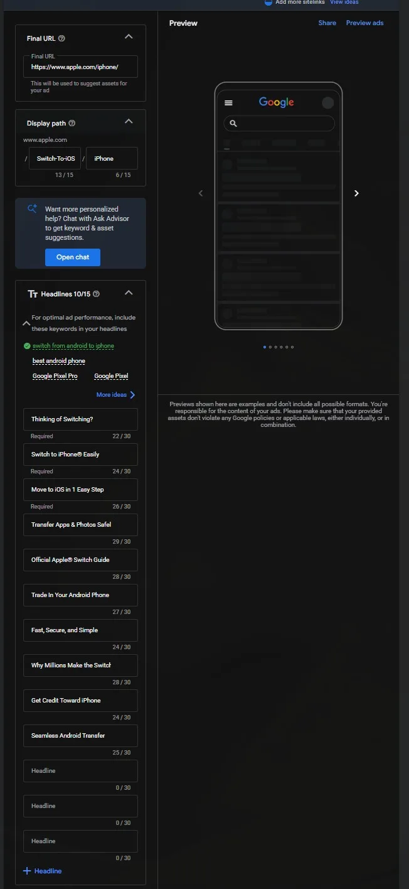
The staged ad build centers switching assistance and destination relevance rather than unverified superiority claims.
Exclusions and review
Negatives separate three incompatible signals: support and repair terms from existing owners; secondary-market and accessory searches; and informational queries such as manuals, forums, or teardowns. All indicate that the searcher is committed to the current device or looking for something other than a new ecosystem.
A live test would monitor search terms, policy status, assisted conversions, CPA, landing-page completion, and switching behavior. Legal approval and a defined comparison-claim standard are launch requirements, not cleanup tasks.
Performance Max portfolio growth
A governed cross-channel growth layer designed to extend the Search portfolio without hiding where demand began.
ChannelGoogle Ads Performance Max
ReachSearch, YouTube, Display, Discover, Gmail, and Maps
StatusDemonstration configuration
Portfolio exercise — not client work. The case shows controllable inputs and governance. It does not demonstrate incremental lift or verified production performance.
Question
How should Performance Max add reach without obscuring the intent structure already owned by Search?
Decision
Use a governed feed, one coherent asset group, complete creative coverage, and audience signals as inputs.
Artifact
Merchant setup, asset-group configuration, creative inventory, sitelinks, and audience-signal design.
Next step
Validate the feed and tracking, establish a baseline, then test with an approved budget and holdout logic.
One governed foundation
The demonstration connects Merchant Center and establishes one coherent asset group, “All Products — Core Creative,” with a specific product destination. Performance Max does not expose the same keyword and ad-group controls as Search, so feed health, asset grouping, URL logic, brand exclusions, and measurement become the operating levers.
Complete inputs for automation
All short and long headline slots are filled with distinct product, service, financing, and switching messages rather than variations of one sentence. The sitelinks—Business Solutions, Trade-In Value, Compare iPhone Models, and Shop Mac & iPad—use themes consistent with the Search portfolio so cross-channel exposure does not create a disconnected experience.
Audience signals combine search themes such as hardware deals, upgrading to iPhone, custom workstation specifications, and creative-professional needs with relevant in-market groups. These are starting signals, not hard targeting rules; the distinction matters when interpreting delivery.
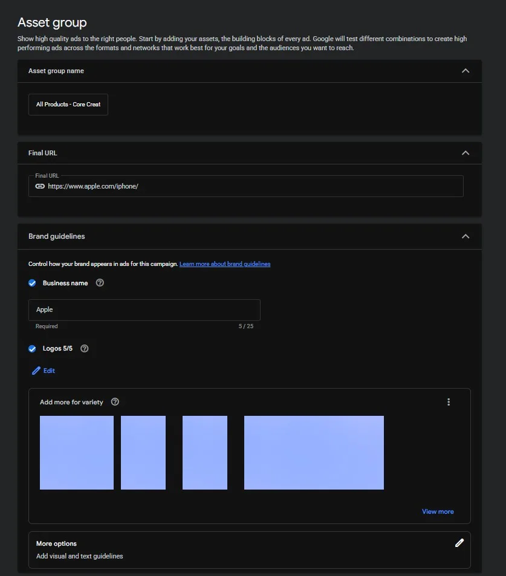
The asset-group setup establishes the destination and coherent creative unit that the rest of the PMax build depends on.
Validation and incrementality
Feed health
Resolve disapprovals, pricing mismatches, availability issues, and weak product titles before media is allowed to scale.
Measurement
Validate conversion value, currency, purchase deduplication, and attribution before comparing the channel with Search.
Overlap control
Monitor brand exclusions, search-term insights, and existing Search coverage so automated reach is not mistaken for incremental demand.
Test design
Use an approved budget, baseline period, and holdout or comparable incrementality method before claiming lift.
GTM architecture & consent governance
A governed container, event-trigger, release, and Consent Mode architecture with an engineering-ready commerce payload.
ToolsGoogle Tag Manager and GA4
PatternEvent-driven data layer
StatusTechnical demonstration
Portfolio demonstration — not a production deployment. Public identifiers are withheld and the implementation is presented as a technical blueprint.
Question
How should container responsibilities, consent states, and commerce-event triggers be separated?
Decision
Use clear tag taxonomy, default-denied consent, event-driven triggers, and named releases.
Artifact
A tag map, trigger model, release history, and an engineering-ready add_to_cart contract.
Next step
Run GTM Preview and GA4 DebugView, then reconcile event payloads with commerce data.
A decoupled measurement layer
Business-significant interactions are pushed into a structured dataLayer and consumed asynchronously by the container. This avoids brittle listeners tied to CSS selectors or DOM structure, so a front-end redesign does not silently break the measurement contract. GTM owns container and trigger orchestration, GA4 owns event and e-commerce reporting, and the Conversion Linker persists eligible first-party click identifiers.
Container responsibilities
Google tag
Fires during initialization so the measurement identity and session context exist before event-scoped tags.
Conversion Linker
Runs at initialization to preserve eligible advertising click identifiers in first-party context.
Commerce events
Listen for named data-layer events such as add_to_cart, not presentation-layer clicks or class names.
Consent governance
Begin from denied storage states where required, then update state from the consent-management platform before eligible tags act.
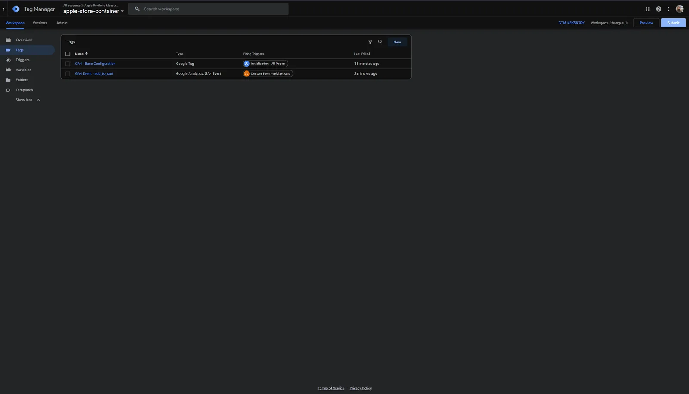
The container uses self-documenting tags and explicit triggers rather than opaque click listeners.
Engineering data contract
The payload clears stale e-commerce state before sending a new item array. Currency, value, SKU, name, price, quantity, and category are typed consistently so the same event can support GA4 reporting and downstream advertising use.
Named container versions record who changed the implementation, what changed, and when it was released. Preview, DebugView, and backend reconciliation form the release gate; a published container version alone is not proof that the data is correct.
Stream architecture & cross-domain linking
A session-continuity blueprint covering linked domains, referral exclusions, internal traffic, retention, and enhanced measurement.
ToolGA4 web stream
JourneyMarketing site to storefront and checkout
Retention14 months
Portfolio demonstration — not a verified production configuration. The architecture shows the intended controls and validation method.
Question
How can sessions and acquisition credit remain intact when a commerce journey crosses domains?
Decision
Configure linked domains, preserve linker parameters, exclude payment referrals, and govern internal traffic.
Artifact
A stream-governance blueprint covering domain rules, referral exclusions, traffic filters, and retention.
Next step
Trace one test journey across every boundary and confirm identifiers and original attribution persist.
Keep one journey as one journey
A campaign may begin on a marketing domain, continue on a storefront, and pass through a payment service before purchase. Without deliberate configuration, those boundaries can fragment a single visitor into separate sessions and allow a payment referral to overwrite the original acquisition source.
Same-root subdomains can share first-party identifiers under the correct cookie configuration. For genuinely distinct domains, the domain configuration and linker behavior must pass the required client context through eligible links; the receiving page must not discard the linker parameter before analytics reads it.
Governance controls
Domain rules
Register every participant in the measured journey using rules narrow enough to avoid linking unrelated hosts.
Referral exclusions
Exclude known payment and checkout services so their return redirects do not claim acquisition credit.
Internal traffic
Define employee, developer, QA, and staging traffic before activating filters that could permanently remove it.
Retention
Use a 14-month event retention setting to support seasonal and year-over-year Explorations.
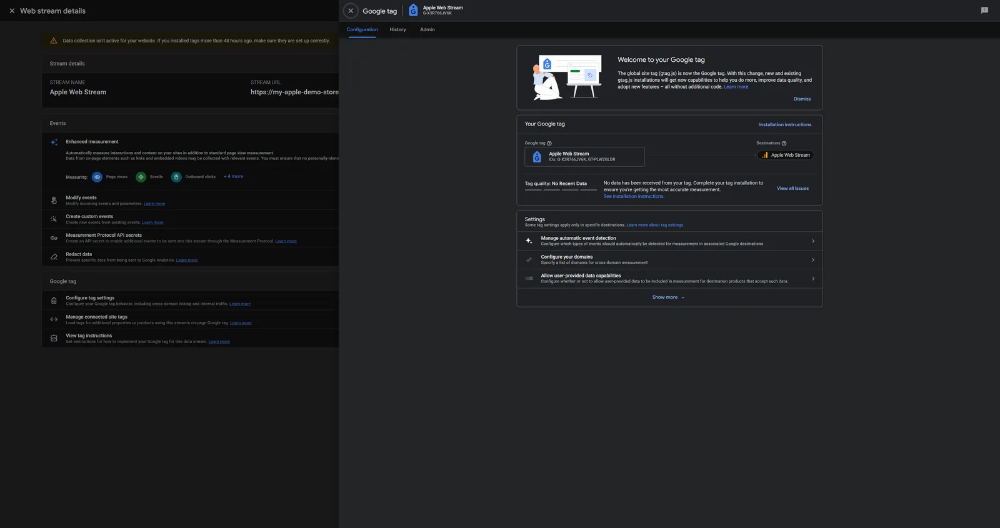
The stream administration surface holds the domain, internal-traffic, and tag controls used by the blueprint.
Validation path
Start a controlled session with campaign parameters, cross every domain and payment boundary, then verify the same client and session context survives. Confirm the original source remains intact, unwanted self-referrals are absent, key events fire once with the expected parameters, and internal test traffic is labeled before any exclusion filter becomes active.
Key events, e-commerce models & validation
A commerce-event contract joining funnel definitions, required item parameters, counting rules, and real-time evidence.
ToolGA4 e-commerce
Core eventsadd_to_cart, begin_checkout, purchase
CountingOnce per event
Portfolio demonstration — not production telemetry. The case demonstrates the schema and QA method without exposing live identifiers or orders.
Question
How should commerce milestones and payload requirements be defined and validated end to end?
Decision
Use standard events, consistent item arrays, once-per-event counting, and a staged GTM-to-GA4 QA sequence.
Artifact
An event specification linking funnel milestones, required parameters, counting rules, and test evidence.
Next step
Validate controlled orders in GTM Preview, DebugView, GA4 reports, and backend order totals.
Measure business milestones, not every interaction equally
The event model promotes three standard commerce milestones to key events: cart addition, checkout start, and purchase. They anchor the buying funnel and give downstream reporting and bidding systems a smaller, more meaningful signal set than raw clicks, scroll depth, and page views.
add_to_cartbegin_checkoutpurchase
Shared payload contract
Parameter
Type
Purpose
item_id
String
Stable SKU across all funnel events
item_name
String
Readable product label in reporting
price
Number
Per-unit price at interaction time
quantity
Integer
Units represented by the action
currency
ISO 4217 string
Reliable multi-currency rollups
value
Number
Total commercial value for reporting and bidding
E-commerce milestones count once per event so separate item actions remain visible. Engagement-style goals may instead use once-per-session counting where repeat actions would inflate the intended outcome. Default lead-event placeholders can remain documented and unused rather than being mistaken for active commerce events.
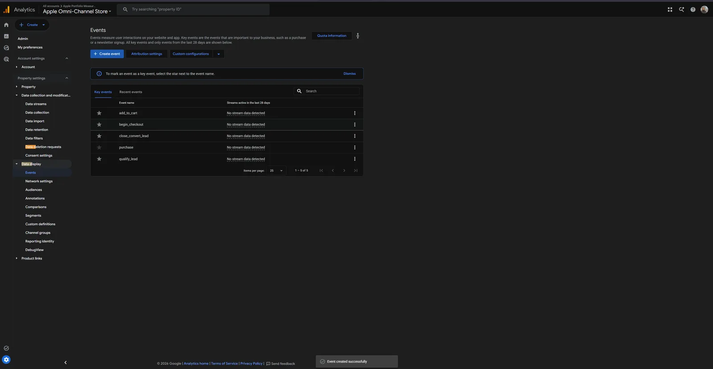
The registry distinguishes the intended commerce events from unused default lead-generation placeholders.
End-to-end QA
Pre-productionInspect the data-layer payload and tag sequence in GTM Preview before publishing.
Real timeUse DebugView to confirm event order, trigger timing, and every required parameter.
Processed reportsConfirm registered events and revenue appear after normal processing.
Source reconciliationMatch transaction identifiers, orders, currency, value, and refunds against the commerce backend.
Custom definitions, metrics & user properties
A registration map connecting raw commerce parameters to useful event-scoped and user-scoped analysis.
ToolGA4 schema governance
Event scopeitem_category
User scopecustomer_type
Portfolio demonstration. The case documents configuration choices and activation paths rather than verified business outcomes.
Question
Which parameters should become durable GA4 definitions, and at what scope?
Decision
Register product category at event scope and customer status at user scope with consent-aware activation.
Artifact
A schema map connecting raw parameters to reportable definitions and audience use cases.
Next step
Confirm values in DebugView, allow processing, then test them in Explorations and audiences.
Registration makes parameters reportable
Raw payload keys can arrive in the GA4 event stream without becoming available as useful breakdowns. Registration is the governance step that turns a collected value into a dimension or metric. Scope must match what the value describes: a product category belongs to an individual event, while a customer type describes the person across sessions until updated.
Two definitions, two jobs
Product category
Event-scoped · item_category
Breaks commerce interactions and revenue down by catalog family such as smartphones, laptops, and wearables.
Customer status
User-scoped · customer_type
Persists a classification such as guest, registered, or VIP for cohort analysis and consent-aware audience building.
The registered dimensions support custom Exploration tables such as revenue by product category and engagement by customer tier. A user-scoped property can also support audience activation, subject to consent, policy, and data-quality requirements.
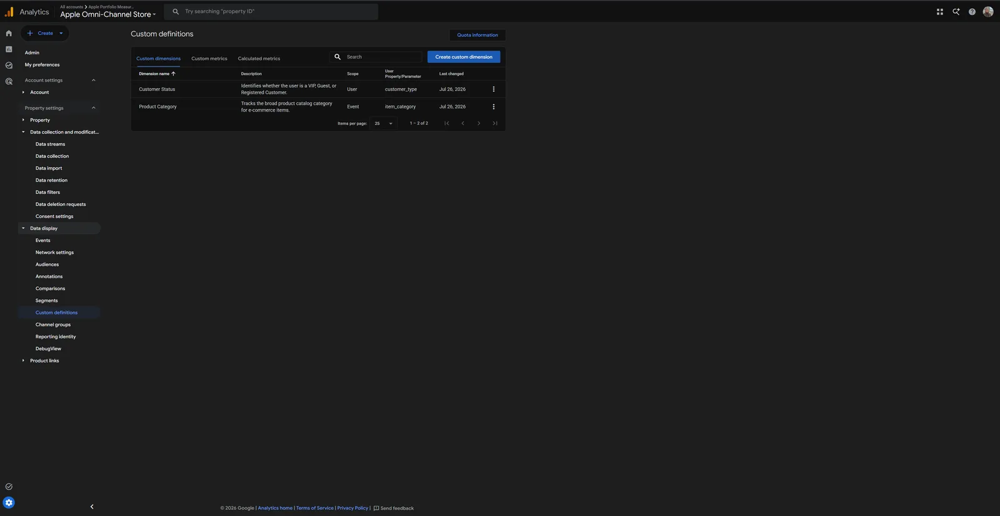
The administration table confirms the two custom definitions are registered at their intended scopes.
Validation
Inspect raw parameter values first, confirm that naming and case are consistent, then wait for processing before testing report availability. Audience activation should only follow after value coverage, consent eligibility, membership logic, and refresh behavior have been verified.
BigQuery export & cloud warehousing
An event-level export design covering daily and intraday modes, data residency, warehouse ownership, and analytical use.
SourceGA4
DestinationGoogle BigQuery
ModesDaily and intraday
Portfolio blueprint. The setup surface is demonstrated, but no completed production link or historical warehouse is claimed.
Question
How should event-level GA4 data be exported and governed for deeper analysis?
Decision
Define export mode, dataset region, ownership, cost controls, and downstream questions before activation.
Artifact
An export design connecting operational requirements with warehouse configuration and analytical use cases.
Next step
Complete the property link, inspect the first partitions, and reconcile purchase events with GA4 totals.
Why leave the reporting interface
The GA4 interface is built for fast product reporting, not arbitrary event-level analysis over an unrestricted history. A BigQuery export exposes collected events, parameters, user properties, and item arrays for SQL modeling, custom retention, CRM joins, and reproducible transformation logic. The warehouse does not improve poor collection; it makes the collected structure available for deeper inspection.
Export choices
Daily export
Cost-conscious historical pipeline
One partitioned table per day supports scheduled reporting, long-horizon analysis, and models that do not need same-hour data.
Intraday export
Low-latency operational pipeline
Intraday tables support fresher dashboards, anomaly detection, and operational use cases that cannot wait for the next daily partition.
The Google Cloud project, dataset region, access roles, retention, query-cost controls, and downstream owner must be defined before linking. Dataset residency is a governance choice because it cannot be changed retroactively without creating a new export path.
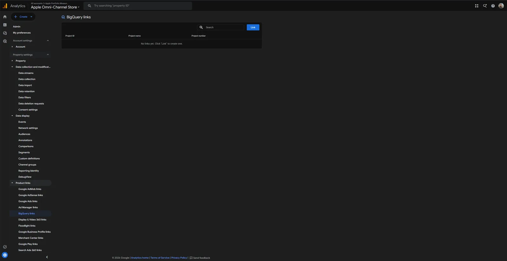
The demonstration reaches the correct BigQuery integration surface but does not claim that a production link has been completed.
Downstream capabilities
Attribution: flatten event parameters and item arrays to model touchpoints with explicit SQL logic.
Lifetime value: build cohorts and revenue histories beyond interface-level reports.
CRM joining: connect consented identifiers to downstream customer records under defined governance.
Business intelligence: publish modeled tables to Looker Studio or another BI layer.
Machine learning readiness: prepare governed features only after data quality, cost, and privacy controls are in place.
Search-term audit & negative-keyword governance
A repeatable query-classification and exclusion workflow for locating waste without blocking valuable intent.
EnvironmentPaused staging sandbox
Illustrative scope1,200+ queries
CadenceDaily triage and bi-weekly governance
Portfolio simulation — not client data. The $48,250 spend, $12,410 projected waste, and 98.4% precision figures demonstrate the audit method rather than a verified employer outcome.
Question
How should a large query set be classified into keep, exact, isolate, or exclude decisions?
Decision
Use spend and conversion evidence, record exclusion scope, and monitor approved changes for reversals.
Artifact
A query log with intent, action, exclusion scope, expected effect, owner, and review cadence.
Next step
Export the live report, document the waste calculation, apply approved changes, and monitor impact.
Method and decision log
Every search term is evaluated against intent, spend, conversion evidence, and the account structure it should belong to. The audit avoids treating all zero-conversion traffic alike: a commercially relevant query may need a dedicated exact keyword, a new ad group, or more data rather than an immediate negative.
Query
Signal
Decision
Directive
buy macbook pro 16 inch
High commercial intent, positive CVR
Keep and scale
Promote to exact
free macbook pro pdf manual
Informational, no conversion
Negative exact
Add [free] and [pdf]
apple macbook repair store near me
Service intent, no conversion
Negative phrase
Add "repair"
galaxy s23 ultra case leather
Accessory and competitor noise
Negative phrase
Add "galaxy"
macbook pro trade in value
Mid-funnel, positive CVR, wrong route
Isolate
Dedicated exact campaign
Two levels of exclusions
Search account
Campaign-level sculpting
Protect Brand Defense from competitor terms, isolate trade-in and support intent from Flagship, and keep branded demand out of PMax where required.
Account-level shared lists
Apply universal zero-intent, secondary-market, employment, support, and post-purchase exclusions consistently across eligible campaigns.
The sandbox inventory verifies that governed shared lists exist at account level; the case-study metrics remain simulated.
Operating thresholds and cadence
Spend without conversion
A term reaching $50 in a rolling 30-day window with no conversion is flagged for triage within 48 hours, not auto-blocked.
CTR decay
An exact keyword below 60% of its ad-group average across 1,000+ impressions triggers match and message review.
Match-type isolation
A converting broad or phrase term is promoted to exact and then excluded from the source route to prevent internal competition.
A controlled test comparing price-anchor messaging with friction-reduction messaging under commercial guardrails.
CampaignNon-brand flagship Search
Primary contrastPrice anchor vs. switching simplicity
Minimum sample2,000 clicks per variant
Portfolio simulation. The 30-day split-test figures illustrate the decision framework and do not represent a live employer experiment.
Question
Does friction-reduction messaging improve conversion performance relative to a price anchor?
Decision
Test one message contrast with pre-registered metrics, stopping rules, and CPA/ROAS guardrails.
Artifact
A hypothesis, controlled asset matrix, primary metrics, guardrails, and rollout protocol.
Next step
Use a campaign experiment where allocation must remain clean and register the stopping rule before launch.
Hypothesis and thresholds
For non-brand Android switchers, Concept B reduces perceived migration friction with one-click transfer and switching-assistance language. Concept A anchors the offer in price, financing, and product performance. The pre-registered thresholds require at least 2,000 clicks per variant, more than 15% CTR uplift, more than 10% CVR uplift, and 95% statistical confidence, while downstream CPA and ROAS must hold or improve.
Controlled asset matrix
Asset
Copy
Concept
Role
Headline
Official Apple Store — Fast Free Shipping
Control A
Brand relevance
Headline
Switch to iPhone Effortlessly — Move in 1-Click
Variant B
Friction reduction
Headline
Get Up to $250 Instant Trade-In Credit
Variant B
Switcher incentive
Headline
Powered by A19 Bionic — Unmatched Performance
Control A
Feature anchor
Description
Transfer your Android files, photos, and settings with Move to iOS.
Variant B
Migration CTA
Description
Get zero-percent financing and fast, free delivery on all models.
Control A
Value anchor
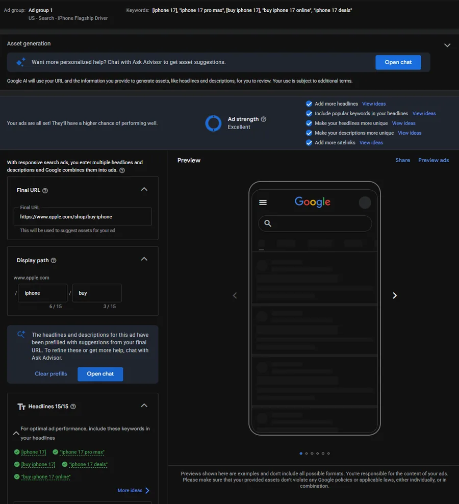
The staged builder verifies complete asset inventory and “Excellent” ad strength; ad strength is a setup signal, not the experiment outcome.
Illustrative decision matrix
Control A4.1% CTR · 2.8% CVR · $142 CPA
Challenger B5.8% CTR · 4.2% CVR · $95 CPA
If B wins and commercial guardrails hold: scale the winning proposition across non-brand switcher campaigns and update related asset groups.
If the result is inconclusive: retain the learning and test a clearer CTA contrast rather than declaring a winner early.
If A wins or downstream economics worsen: revert to ecosystem-authority messaging and test pricing separately.
Competitive auction response
A bounded response memo that distinguishes rank pressure, budget pressure, demand movement, and competitor displacement.
WindowIllustrative 14-day alert
Primary signalSearch impression-share loss
OutputThree-step response protocol
Portfolio simulation. The competitor panel and benchmark table use illustrative case-study values because the sandbox remains below Google’s reporting threshold.
Question
What evidence is required before responding to a modeled decline in impression share?
Decision
Confirm the source of loss before changing bids, then use constrained messaging, bidding, and audience tests.
Artifact
An executive memo separating rank, budget, demand, and competitor displacement.
Next step
Pull segmented Auction Insights, confirm the cause, and run a bounded response test.
Situation diagnosis
The modeled alert shows flagship Search impression share falling from 78% to 63%. Lost impression share from rank rises by 11 points while lost share from budget remains stable at 4%, indicating that simply increasing the daily budget would not address the modeled problem. Competitor overlap and top-of-page presence are the hypotheses to investigate, not proof by themselves.
Domain
Impression share
Overlap rate
Top of page
Outranking share
apple.com
63.2%
—
82.4%
—
samsung.com
24.8%
48.6%
74.1%
18.2%
bestbuy.com
18.5%
36.2%
58.9%
12.4%
amazon.com
14.1%
28.5%
46.3%
8.1%
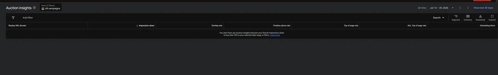
The sandbox panel correctly returns no competitor rows below its reporting threshold; the modeled table above demonstrates how the populated data would be interpreted.
Three-step response
Adapt assetsTest trade-in and structured benefit messaging that addresses the observed promotion without unsupported comparison claims.
Run a bounded bidding testEvaluate Target Impression Share on a limited set of exact switcher terms rather than changing the whole account.
Intercept qualified intentAdd relevant competitor-promotion themes as PMax audience signals, treating them as inputs rather than strict targeting.
Success is not “recover impression share at any cost.” The test must monitor CPC, CPA, conversion quality, and marginal return so a rank response does not create a larger commercial problem.
SEM fleet executive center
A leadership reading path from portfolio status to historical trend, device composition, campaign accountability, risks, and owned actions.
ToolLooker Studio
AudienceMarketing leadership
WindowJanuary 2018 to July 2024
Portfolio demonstration — illustrative data. Revenue, conversion, mix, and campaign figures are case-study values rather than independently verified results.
Question
What does leadership need to see to judge fleet health and direct the next review?
Decision
Use a four-layer reading path: status, trend, composition, and campaign accountability.
Artifact
A leadership dashboard with defined KPI, trend, device, matrix, risk, and action layers.
Next step
Reconcile source totals, annotate incidents, and present each proposed action with an owner and review date.
Four layers, four questions
Status
Revenue, conversions, clicks, and conversion rate answer whether the fleet is healthy now.
Trend
Revenue and traffic on the same timeline show whether volume and value are moving together.
Composition
Device revenue makes the operating mix visible and informs experience investment.
Accountability
A campaign matrix exposes where spend, clicks, conversions, and revenue are concentrated.
The sequence moves from “How are we doing?” to “Where does the result come from?” before anyone changes a campaign. Limiting the first layer to four metrics protects the executive view from becoming another analyst dashboard.
Illustrative dashboard read
Mobile64.0%
Desktop29.9%
Tablet6.1%
The modeled trend is relatively flat through most of 2020, then shows revenue and clicks rising together and reaching peak monthly revenue above $900K in late 2023. The dashboard treats the post-2020 period as the more relevant operating baseline while still requiring the team to explain seasonality, attribution changes, and tracking incidents before forecasting from it.
Campaign interpretation
Signal
Observation
Working implication
Top PMax value
$1.8M–$2.0M per campaign
Investigate whether proven structures can absorb incremental budget.
Heatmap concentration
High-density cells cluster around PMax and hybrid structures
Review PMax as a scaling candidate, subject to incrementality and marginal return.
Search role
Secondary contributor in the model
Retain deliberate brand and high-intent query control.
Concentration alone does not prove causality. The working response is to improve the inputs automation depends on—first-party signals, creative depth, feed quality, and offline outcomes—while testing marginal return instead of fragmenting spend into more campaigns.
Risk and executive roadmap
Mobile CPC inflationMonitor mobile CPA
PMax concentrationMonitor revenue share by campaign
Impression-share lossSeparate rank from budget
Creative fatigueMonitor CTR trend
Budget saturationMonitor marginal ROAS
Revenue accelerationTest incremental budget in top-decile structures and deepen the asset groups and signals supporting them.
Mobile efficiencyPrioritize page speed, checkout, and mobile creative while maintaining desktop coverage and reviewing tablet priority.
Reporting governanceUse the dashboard as the standing review layer and add efficiency-normalized metrics to the campaign matrix.
ROAS & budget pacing monitor
A financial control view joining spend, revenue, calculated return, pacing, campaign profitability, risks, and approval-ready reallocations.
ToolLooker Studio
AudienceFinance and marketing
MetricActual ROAS at campaign grain
Portfolio demonstration — illustrative data. Spend, revenue, profitability, and reallocation figures are not independently verified business results.
Question
How can finance and marketing inspect return and pacing without losing campaign-level context?
Decision
Define ROAS once, show portfolio and campaign views together, and isolate loss-making scenarios.
Artifact
A fiscal dashboard with calculated-field logic, trend, pacing matrix, risk controls, and proposed actions.
Next step
Reconcile revenue and cost, confirm attribution windows, flag low volume, and require approval before shifts.
One calculated field
Actual ROAS (%) = (SUM(Conversion Value) / SUM(Cost)) × 100
The field is computed at campaign grain and then aggregated so the portfolio scorecard and campaign matrix use the same mathematical definition. A displayed result of 1,244.30% is equivalent to 12.44x: $12.44 in attributed conversion value for every $1 of modeled spend. Percentage format supports a finance reading, while the multiple can remain a secondary representation.
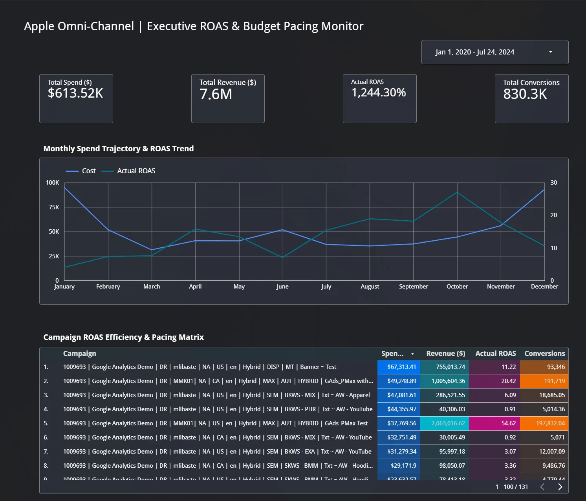
The dashboard moves from portfolio-level fiscal status to trend and then to campaign-level pacing and profitability.
Reading and action thresholds
In the model, two Search campaigns sit at 0.91x–0.92x while the strongest PMax example reaches 54.62x. A campaign sustained below 1.0x is returning less attributed value than spend before margin and other business costs; it becomes a freeze-and-review candidate rather than a routine optimization ticket.
Review thresholdBelow 1.0x for two consecutive months
Modeled scaling candidate54.62x PMax example
The comparison remains incomplete until attribution windows, conversion value quality, campaign volume, margin, incrementality, and brand cannibalization are checked. A high platform ROAS is a prioritization signal, not automatic permission to scale.
Risk controls
PMax concentrationRevenue share of top three campaigns
Brand cannibalizationBrand vs. non-brand Search ROAS
Test dilution30-day blended ROAS trend
Budget creepSpend share below 1.0x
Seasonal pressureQ4 CPC and marginal return
Budget governance roadmap
Reallocate deliberatelyFreeze or reduce sustained sub-1.0x campaigns and submit a documented shift toward proven candidates for approval.
Use marginal rulesDirect new budget to the strongest eligible structures until incremental ROAS shows diminishing return.
Audit underperformersCheck query mix, brand adjacency, tracking, and landing experience before concluding the campaign itself is the problem.
Automate alertsAdd month-over-month pacing thresholds so campaigns crossing into unprofitable territory are surfaced before the next manual review.
Funnel attribution & micro-conversion pathway
A journey dashboard connecting traffic, devices, channels, macro outcomes, and stacked diagnostic events.
ToolLooker Studio
AudiencePerformance and measurement teams
WindowJanuary 2020 to July 2024
Portfolio demonstration — illustrative data. Channel, device, and event figures are modeled. Rates above 100% require an event-definition audit and must not be read as purchase conversion rate.
Question
How should a reviewer interpret a funnel when one click can produce multiple counted events?
Decision
Show macro and micro events together, label the calculation, and treat rates above 100% as a governance question.
Artifact
A funnel dashboard with macro status, channel and device comparison, event-density analysis, and controls.
Next step
Audit event definitions, deduplicate purchases, reconcile channels, and test mobile completion friction.
A dashboard shaped like the journey
Macro scorecards
Impressions, clicks, conversions, and the defined macro rate show the largest modeled drop.
Channel volume
Clicks and counted events appear side by side so acquisition and event output are not confused.
Device completion
Bottom-funnel event share identifies where the modeled journey finishes.
Pathway matrix
Campaign rows reveal exactly where stacked events produce rates above 100%.
Illustrative channel and device read
Channel
Clicks
Counted events
Interpretation
Performance Max
304.9K
593.6K
Multiple counted events per click; audit event mix before comparing efficiency.
Search
241.9K
142.5K
Lower event-to-click ratio than PMax in the modeled data.
Display
152.7K
93.3K
Investigate traffic quality and completion friction.
Mobile70.6%
Computers18.1%
Tablets11.3%
What a rate above 100% means
The pathway matrix models campaigns at 129.8% and 192.46% because the numerator includes multiple diagnostic events—such as cart additions, checkout starts, purchases, and post-purchase actions—against clicks. That can describe event density, but it is not a literal purchase success rate and cannot justify budget expansion on its own.
Useful signal
Which campaigns and sessions generate deeper measured interaction across the defined event set.
Required control
Separate macro purchase outcomes from micro events, document the formula, deduplicate transaction IDs, and report both views.
Risk and recommendations
Double countingQuarterly event-definition audit
Mobile frictionClick-to-purchase drop-off
PMax concentrationMacro outcome share, top three
Display wasteQualified outcome per click
Dormant channelsImpression and click volume
Separate outcome typesReport purchases and revenue independently from stacked diagnostic events before reallocating budget.
Audit mobile completionPrioritize page speed, checkout, and form friction where most modeled completion events occur.
Rebuild weak channelsFix creative and destination alignment before adding Display or Video budget.
Formalize governancePublish event definitions, calculation grain, deduplication rules, and a reconciliation owner.
Working templates
Three practical references for query exclusions, experiments, and monthly reporting. Open a summary here or read the full version.
Negative keyword libraryQuery routing and waste reduction
A three-tier exclusion architecture prevents cannibalization and keeps broad discovery traffic from overriding exact, brand, or service intent.
A/B testing playbookExperiment design and rollout decisions
The four-stage process keeps tests focused and reduces early calls: isolate one variable, check the sample, evaluate the result, and record the decision.
HypothesisSampleEvaluateScale or learn
Minimum 14-day duration to capture weekday and weekend behavior.
Target 95% confidence before declaring a winner.
Track CTR, CVR, CPA, and creative-quality guardrails together.
Log inconclusive tests so minor variations are not repeated.
EXL · American Express Global Business Travel · Remote
Manages high-volume international travel operations across booking, payment, and itinerary systems, while analyzing customer-journey friction through CRM workflows.
Customer Success & Analytics Specialist
CGS Romania · Verizon · Remote
Delivered KPI-led customer support across 30+ daily interactions and used structured diagnostics and CRM data to improve resolution quality and workflow accuracy.
Selected leadership & achievements
REVMANEX Global Challenge winner
Developed the first-place data-driven business growth strategy in an international competition.
Marketing leadership & consulting
Led event marketing for Amnesty International Norway and delivered a strategic digital marketing audit for Start LHMR.
Looking for a marketer who is comfortable with the numbers?
For roles or projects in paid search, measurement, and marketing analytics, email me directly.